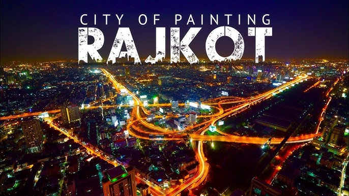
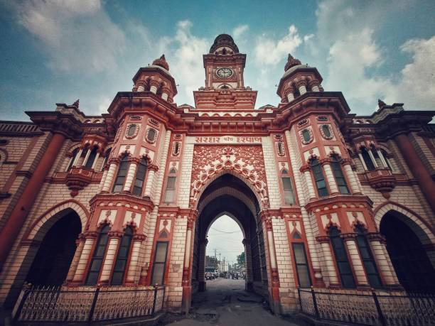
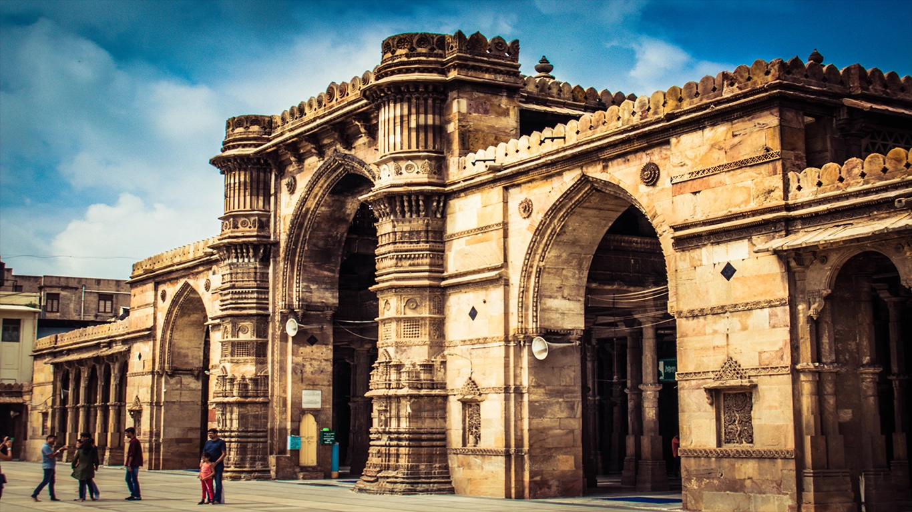

Explore Cities
Start Your Journey Through Gujarat





Discover the unexplored side of Gujarat
Explore lesser-known places, untold stories, peaceful corners, and local treasures across Gujarat's cities.
Our Mission
Most travelers know Gujarat for its popular landmarks, but many beautiful places remain unnoticed. Hidden Gems of Gujarat helps users discover unique local spots across cities like Rajkot, Junagadh, Surat, Ahmedabad, and Vadodara.
Explore Cities



Explore by Category
Hidden lakes, green spaces, and peaceful viewpoints.
Old streets, forgotten architecture, and heritage corners.
Temples, calm sacred spots, and soulful hidden places.
Authentic food lanes, traditions, and local life.
Why This Platform
This platform is created to help people discover meaningful places beyond the common tourist routes. By focusing on lesser-known locations, it encourages deeper local exploration and a more personal travel experience.
Find lesser-known places, hidden stories, and new experiences across Gujarat.
Start Exploring